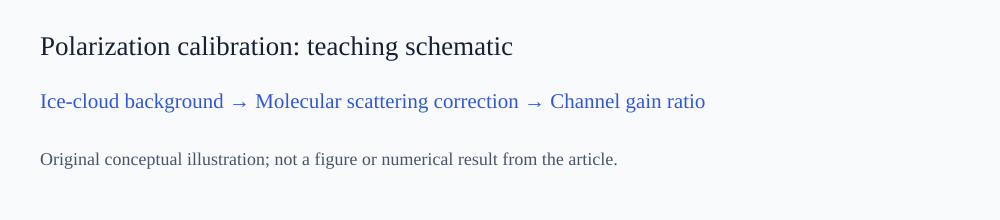
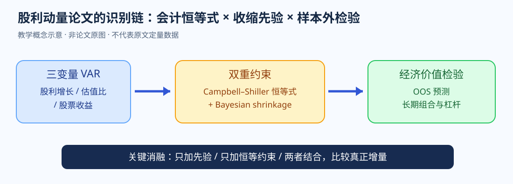

WEEKLY PAPER DIGEST · ORIGINAL READINGS
2026年第41周 · 顶刊论文精读
2026年10月5日—10月11日（ISO 第41周）。10月5日区块为此前归档的历史回填，日期仅用于保留原始档案顺序；10月8日区块为本次正式新增。
2026年10月5日 · 历史回填（日期非精确推送时间）
1. Global declines in net primary production in the ocean color era
一句话抓核心：全球变暖下海洋 NPP 是否已系统下降，原因是 biomass 下降还是 physiology 改变？ 作者的核心做法是：用 25 年 SeaWiFS+MODIS 与 absorption-based model 拆分 aφ、Cphyto、growth rate。最关键的结果是：约 48% 海域 NPP 显著下降，growth rate 下降幅度明显大于 biomass；subsurface NPP fraction 上升。
先抓住矛盾，再顺着证据链走
这篇真正有价值的地方，是作者没有停在“全球 NPP 在下降”，而是继续问下降来自 biomass 变少，还是同样 biomass 的生理生产效率下降。
先证明下降不是局部事件。
aφ、Cphyto、growth rate 分别对应色素吸收、biomass 与 physiology。
这把机制从‘藻少了’推进到‘营养限制下单位生物量生产效率下降’。
表层吸收下降让光穿透更深，subsurface NPP fraction 上升，直接暴露 passive satellite 的观测盲区。
1. 研究问题：作者真正想解决什么
全球变暖下海洋 NPP 是否已系统下降，原因是 biomass 下降还是 physiology 改变？
2. 核心假设与物理 / 经济机制
用 25 年 SeaWiFS+MODIS 与 absorption-based model 拆分 aφ、Cphyto、growth rate。
3. 数据、实验或模型：证据链是怎样搭起来的
文章的方法设计围绕上述假设展开：用 25 年 SeaWiFS+MODIS 与 absorption-based model 拆分 aφ、Cphyto、growth rate。
4. 关键结果：哪些结果真正推动了故事
约 48% 海域 NPP 显著下降，growth rate 下降幅度明显大于 biomass；subsurface NPP fraction 上升。
5. 最重要的创新点
- 问题创新：把原先较宽泛的问题压缩为“全球变暖下海洋 NPP 是否已系统下降，原因是 biomass 下降还是 physiology 改变？”，使研究目标具备明确的可检验性。
- 方法创新：用 25 年 SeaWiFS+MODIS 与 absorption-based model 拆分 aφ、Cphyto、growth rate。 这使新增方法或观测量直接服务于机制识别，而不是单纯增加模型复杂度。
- 证据创新：约 48% 海域 NPP 显著下降，growth rate 下降幅度明显大于 biomass；subsurface NPP fraction 上升。 文章用结果层面的变化证明新增信息确实改变了科学或经济判断。
- 叙事创新：全球趋势 → 拆中间变量 → 生理机制 → EOF/气候状态 → 垂向补偿。 结果之间具有前后依赖关系，能够形成闭环。
6. 科研故事线：为什么读起来是一个完整故事
7. 为什么能进入高水平期刊
从相关趋势推进到生理机制，并自然提出 subsurface observation gap。
薄弱点与最值得继续追的问题
深层 NPP 仍较依赖模型，全球长期 nutrient observation 不足。
8. 对你现有研究可以直接怎么迁移
海洋 LiDAR 可直接验证“碳固定向被动卫星难观测深度迁移”的全球假设。
- 研究问题层：不要只问某个参数是否敏感，而要问它能否解除已有观测中的退化、是否改变 posterior / Jacobian / DFS，或者是否帮助区分竞争机制。
- 方法层：优先采用“基础模型 → 加入一个新过程或新通道 → 独立验证 → 消融/反事实”的设计。这样每一部分结果都能回答上一部分留下的疑问。
- 论文叙事层：把模型、仪器或算法放在科学问题之后。真正有价值的贡献是说明新方法让过去无法区分的过程、参数或空间结构变得可区分。
进一步精读：公式、证据强度与审稿视角
把 NPP 拆成 biomass × growth rate 是最关键的思想。若 \(C_{phyto}\) 变化小但 \(\mu\) 明显下降，说明生态系统改变主要发生在单位生物量生产效率，而不是简单的‘藻变少’。
趋势只是第一层；aφ、Cphyto、µ 的拆分提供机制；EOF 与气候指数提供更大尺度背景；subsurface fraction 上升则进一步产生新的观测问题。故事因此从现象一直推进到观测体系缺口。
最大争议会集中在深层 NPP，因为被动卫星无法直接看见，模型中的 photoacclimation 和 nutrient limitation 假设会决定结果。
这给海洋 LiDAR 一个很强的科学问题：被动卫星看到的表层变化是否正在低估深层碳固定？你可以联合 LiDAR/BGC-Argo 验证 SCM 与 subsurface NPP 的长期迁移。
2. FLARE-GMM: an automatic aerosol typing model based on Mie–Raman–fluorescence lidar measurements with LILAS
一句话抓核心：传统 elastic/Raman 参数重叠时，什么新 observable 最能提升颗粒类型识别？ 作者的核心做法是：用 δ532 表征形态、fluorescence ratio 表征成分，并按 RH 状态训练 GMM。最关键的结果是：真实长期观测显示 fluorescence+depolarization 能提供互补信息，并输出概率分类与不确定性。
先抓住矛盾，再顺着证据链走
这里最重要的不是 GMM 算法本身，而是作者选择了两个物理上近似正交的观测维度：退偏看形态，荧光看有机/生物成分，再用 RH 处理环境调制。
多放几个高度相关的参数不一定增加独立信息。
成分敏感性与 depolarization 的形态敏感性互补。
吸湿增长会移动颗粒 cluster，如果不分状态，环境效应容易被误判成类型差异。
边界样本不再被强制硬分类，这对研究不可辨识区域尤其重要。
1. 研究问题：作者真正想解决什么
传统 elastic/Raman 参数重叠时，什么新 observable 最能提升颗粒类型识别？
2. 核心假设与物理 / 经济机制
用 δ532 表征形态、fluorescence ratio 表征成分，并按 RH 状态训练 GMM。
3. 数据、实验或模型：证据链是怎样搭起来的
文章的方法设计围绕上述假设展开：用 δ532 表征形态、fluorescence ratio 表征成分，并按 RH 状态训练 GMM。
4. 关键结果：哪些结果真正推动了故事
真实长期观测显示 fluorescence+depolarization 能提供互补信息，并输出概率分类与不确定性。
5. 最重要的创新点
- 问题创新：把原先较宽泛的问题压缩为“传统 elastic/Raman 参数重叠时，什么新 observable 最能提升颗粒类型识别？”，使研究目标具备明确的可检验性。
- 方法创新：用 δ532 表征形态、fluorescence ratio 表征成分，并按 RH 状态训练 GMM。 这使新增方法或观测量直接服务于机制识别，而不是单纯增加模型复杂度。
- 证据创新：真实长期观测显示 fluorescence+depolarization 能提供互补信息，并输出概率分类与不确定性。 文章用结果层面的变化证明新增信息确实改变了科学或经济判断。
- 叙事创新：传统参数退化 → 新 fluorescence observable → RH 环境校正 → probabilistic typing → 长期应用。 结果之间具有前后依赖关系，能够形成闭环。
6. 科研故事线：为什么读起来是一个完整故事
7. 为什么能进入高水平期刊
每个观测量有明确物理职责，并重视 environmental modulation。
薄弱点与最值得继续追的问题
mixed aerosols 和跨站点泛化仍困难；训练需人工筛纯层。
8. 对你现有研究可以直接怎么迁移
你的微藻—高岭石实验应同步测 parallel/perpendicular + fluorescence，并输出 posterior 而非硬标签。
- 研究问题层：不要只问某个参数是否敏感，而要问它能否解除已有观测中的退化、是否改变 posterior / Jacobian / DFS，或者是否帮助区分竞争机制。
- 方法层：优先采用“基础模型 → 加入一个新过程或新通道 → 独立验证 → 消融/反事实”的设计。这样每一部分结果都能回答上一部分留下的疑问。
- 论文叙事层：把模型、仪器或算法放在科学问题之后。真正有价值的贡献是说明新方法让过去无法区分的过程、参数或空间结构变得可区分。
进一步精读：公式、证据强度与审稿视角
退偏 \(\delta\) 更多反映形态/非球形，\(G_{fluo}\) 更多反映有机/生物组分。两者若在观测空间近似正交，就比增加多个彼此相关的 elastic color ratio 更能提高 class separation。
RH conditioning 很重要，因为环境状态会系统性移动 cluster。若不控制 RH，分类器可能把同一颗粒在不同吸湿状态误判成不同类型。
审稿人会问 pure-layer labels 是否可靠，以及 mixed aerosol 下 Gaussian mixture 假设是否失效。跨站点泛化也是关键，因为荧光响应受仪器和环境影响。
你的微藻—高岭石实验应把环境变量固定住，先证明端元在 \((\delta,F)\) 空间可分，再逐步加入 mixture 和浓度变化，看 posterior 如何变宽。
3. Incorporating methane isotopologues alters tropical and subtropical methane emission estimates
一句话抓核心：TROPOMI 能约束总 CH₄，但如何解除 source-sector attribution degeneracy？ 作者的核心做法是：把 XCH4 与 δ13C-CH4、δD-CH4、可选 C2H6 共同进入 GEOS-Chem adjoint 4D-Var，并逐级做信息消融。最关键的结果是：总排放只小幅改变，但 fossil/wetland 等 sector attribution 大幅重排；δ13C+δD 独立验证最佳，额外 ethane 还会引入模型不确定性。
先抓住矛盾，再顺着证据链走
这篇是‘拟合很好仍然可能归因错’的典型案例。只用 XCH₄ 可以把总浓度解释得很好，但 fossil、wetland、livestock 等源之间仍高度可交换。
但它只约束总量，对 source sector 的 posterior 很宽。
同位素相当于给 source 加 fingerprint，改变 Jacobian 的独立方向。
逐级比较 CH₄、CH₄+δ13C、+δD、+C₂H₆，判断每个 tracer 的净信息。
总排放变化并不大，但 fossil / wetland attribution 大幅重排；这正说明拟合误差和参数可辨识性是两回事。
1. 研究问题：作者真正想解决什么
TROPOMI 能约束总 CH₄，但如何解除 source-sector attribution degeneracy？
2. 核心假设与物理 / 经济机制
把 XCH4 与 δ13C-CH4、δD-CH4、可选 C2H6 共同进入 GEOS-Chem adjoint 4D-Var，并逐级做信息消融。
3. 数据、实验或模型：证据链是怎样搭起来的
文章的方法设计围绕上述假设展开：把 XCH4 与 δ13C-CH4、δD-CH4、可选 C2H6 共同进入 GEOS-Chem adjoint 4D-Var，并逐级做信息消融。
4. 关键结果：哪些结果真正推动了故事
总排放只小幅改变，但 fossil/wetland 等 sector attribution 大幅重排；δ13C+δD 独立验证最佳，额外 ethane 还会引入模型不确定性。
5. 最重要的创新点
- 问题创新：把原先较宽泛的问题压缩为“TROPOMI 能约束总 CH₄，但如何解除 source-sector attribution degeneracy？”，使研究目标具备明确的可检验性。
- 方法创新：把 XCH4 与 δ13C-CH4、δD-CH4、可选 C2H6 共同进入 GEOS-Chem adjoint 4D-Var，并逐级做信息消融。 这使新增方法或观测量直接服务于机制识别，而不是单纯增加模型复杂度。
- 证据创新：总排放只小幅改变，但 fossil/wetland 等 sector attribution 大幅重排；δ13C+δD 独立验证最佳，额外 ethane 还会引入模型不确定性。 文章用结果层面的变化证明新增信息确实改变了科学或经济判断。
- 叙事创新：source degeneracy → 多 tracer → ablation → 独立 ObsPack 验证 → sector redistribution。 结果之间具有前后依赖关系，能够形成闭环。
6. 科研故事线：为什么读起来是一个完整故事
7. 为什么能进入高水平期刊
清楚展示“拟合准确≠参数可辨识”，并定量评估每个新观测量的净信息。
薄弱点与最值得继续追的问题
分辨率较粗，同位素站点稀疏，source signature 也有空间变化。
8. 对你现有研究可以直接怎么迁移
你的多模态颗粒反演也应同时报告 signal RMSE 与 posterior/degeneracy volume。
- 研究问题层：不要只问某个参数是否敏感，而要问它能否解除已有观测中的退化、是否改变 posterior / Jacobian / DFS，或者是否帮助区分竞争机制。
- 方法层：优先采用“基础模型 → 加入一个新过程或新通道 → 独立验证 → 消融/反事实”的设计。这样每一部分结果都能回答上一部分留下的疑问。
- 论文叙事层：把模型、仪器或算法放在科学问题之后。真正有价值的贡献是说明新方法让过去无法区分的过程、参数或空间结构变得可区分。
进一步精读：公式、证据强度与审稿视角
贝叶斯反演中，观测项只约束 forward model 可见的组合。XCH₄ 对不同源部门往往高度共线；同位素相当于给状态空间增加新的观测方向，减少 posterior covariance。关键指标因此不是总误差，而是后验相关性和 source allocation。
最漂亮的是 ablation：逐步加 δ13C、δD、C2H6，看总拟合与源归因如何改变。结果表明更多 tracer 不一定总更好，因为模型误差也会跟着增加。
审稿人会问 source signatures 的空间/时间可变性以及同位素站点稀疏性。若 fingerprint 本身不稳，新的观测维度也会引入结构误差。
你的颗粒反演也应做同样的 modality ablation：比较每加入一个通道后 posterior volume、参数相关系数和预测误差分别怎么变。
4. Investor Factors
一句话抓核心：能否从投资者真实持仓结构直接提取 priced factor？ 作者的核心做法是：用 1997–2017 挪威个人投资者持仓，按年龄/财富等特征构造 investor long-short factor。最关键的结果是：market + investor factor 能同时解释持仓共同变化与股票收益横截面，连接 household finance 与 asset pricing。
先抓住矛盾，再顺着证据链走
传统因子从股票特征或收益协方差出发，这篇反过来问：如果资产价格最终由投资者需求形成，那么‘谁持有什么’本身是否就是一个定价状态变量。
按年龄、财富等特征观察不同投资者群体的组合偏好。
将 household demand 映射到可交易收益因子。
只有两边都解释，才说明它不是纯统计构造。
股票和加密研究都应增加 holder structure：集中度、杠杆、长期持有者、ETF/机构流和边际定价者。
1. 研究问题：作者真正想解决什么
能否从投资者真实持仓结构直接提取 priced factor？
2. 核心假设与物理 / 经济机制
用 1997–2017 挪威个人投资者持仓，按年龄/财富等特征构造 investor long-short factor。
3. 数据、实验或模型：证据链是怎样搭起来的
文章的方法设计围绕上述假设展开：用 1997–2017 挪威个人投资者持仓，按年龄/财富等特征构造 investor long-short factor。
4. 关键结果：哪些结果真正推动了故事
market + investor factor 能同时解释持仓共同变化与股票收益横截面，连接 household finance 与 asset pricing。
5. 最重要的创新点
- 问题创新：把原先较宽泛的问题压缩为“能否从投资者真实持仓结构直接提取 priced factor？”，使研究目标具备明确的可检验性。
- 方法创新：用 1997–2017 挪威个人投资者持仓，按年龄/财富等特征构造 investor long-short factor。 这使新增方法或观测量直接服务于机制识别，而不是单纯增加模型复杂度。
- 证据创新：market + investor factor 能同时解释持仓共同变化与股票收益横截面，连接 household finance 与 asset pricing。 文章用结果层面的变化证明新增信息确实改变了科学或经济判断。
- 叙事创新：factor zoo → who owns what → holdings heterogeneity → investor factor → return pricing → household mechanism。 结果之间具有前后依赖关系，能够形成闭环。
6. 科研故事线：为什么读起来是一个完整故事
7. 为什么能进入高水平期刊
独特行政级持仓数据提供新的经济识别视角。
薄弱点与最值得继续追的问题
挪威个人投资者结构与其他市场不同，跨国推广需验证。
8. 学术结论与可操作投资启示
market + investor factor 能同时解释持仓共同变化与股票收益横截面，连接 household finance 与 asset pricing。
股票/加密研究应加入 holder structure：边际定价者、杠杆、拥挤和集中度。
- 组合层：把论文变量先作为风险预算、仓位缩放或筛选条件测试，而不是直接当作单一买卖信号。
- 验证层：使用 point-in-time 数据、walk-forward / out-of-sample 检验，并把交易成本、滑点和极端行情单独计入。
- 决策层：明确区分“平均意义上的资产定价关系”和“当前时点的条件概率”。论文结论提供决策框架，不替代当前估值、流动性和风险状态判断。
进一步精读：公式、证据强度与审稿视角
如果不同投资者群体系统性偏好不同股票，其持仓差异可以被映射成一个 demand factor。股票对该因子的 beta 若能解释未来收益，就说明 investor heterogeneity 具有定价含义。
只看 holdings 相关还不够；关键是同一个 investor factor 同时解释谁持有什么和哪些股票获得更高风险溢价，把 household finance 与 asset pricing 接起来。
外部有效性是最大问题。挪威税制、账户结构和家庭财富构成可能让 investor factor 与美国/中国不同。
在加密市场可以构造类似的 holder factor：长期持有者 vs 高频/杠杆资金、ETF 托管 vs 交易所余额、鲸鱼集中度等，研究谁是边际定价者。
5. Subsurface Methane Accumulation in the Beaufort Sea Driven by Pelagic Processes: A Mechanistic Modeling Approach
一句话抓核心：Beaufort Sea subsurface CH₄ maxima 到底来自 benthic input、水平输运还是水柱生物生产？ 作者的核心做法是：在 GOTM-ERSEM 中逐个加入 zooplankton、bacterial remineralization、MPn degradation 与 lateral transport。最关键的结果是：沿岸 S27 主要由 lateral transport 解释，外海 S19 更支持 pelagic biological production；counterfactual removal 显著改变 sea-air flux。
先抓住矛盾，再顺着证据链走
这篇最适合学‘竞争机制逐项打开’。基础模型解释不了 subsurface CH₄ peak 后，作者没有直接堆一个复杂模型，而是把四个候选过程一个个加进去。
只有明确展示 benthic-centered model 无法重现峰值，新增机制才有必要。
zooplankton、bacterial remineralization、MPn degradation、lateral transport 分别测试。
沿岸 halocline 与 transport 匹配，外海则与 zooplankton / bacteria / DOP / SCM 共位。
删掉最佳机制后 sea-air flux 明显改变，说明机制不仅解释剖面，也影响最终气候量。
1. 研究问题：作者真正想解决什么
Beaufort Sea subsurface CH₄ maxima 到底来自 benthic input、水平输运还是水柱生物生产？
2. 核心假设与物理 / 经济机制
在 GOTM-ERSEM 中逐个加入 zooplankton、bacterial remineralization、MPn degradation 与 lateral transport。
3. 数据、实验或模型：证据链是怎样搭起来的
文章的方法设计围绕上述假设展开：在 GOTM-ERSEM 中逐个加入 zooplankton、bacterial remineralization、MPn degradation 与 lateral transport。
4. 关键结果：哪些结果真正推动了故事
沿岸 S27 主要由 lateral transport 解释，外海 S19 更支持 pelagic biological production；counterfactual removal 显著改变 sea-air flux。
5. 最重要的创新点
- 问题创新：把原先较宽泛的问题压缩为“Beaufort Sea subsurface CH₄ maxima 到底来自 benthic input、水平输运还是水柱生物生产？”，使研究目标具备明确的可检验性。
- 方法创新：在 GOTM-ERSEM 中逐个加入 zooplankton、bacterial remineralization、MPn degradation 与 lateral transport。 这使新增方法或观测量直接服务于机制识别，而不是单纯增加模型复杂度。
- 证据创新：沿岸 S27 主要由 lateral transport 解释，外海 S19 更支持 pelagic biological production；counterfactual removal 显著改变 sea-air flux。 文章用结果层面的变化证明新增信息确实改变了科学或经济判断。
- 叙事创新：基础模型解释失败 → 四种竞争机制 → 垂向峰位/幅度比较 → 独立 proxy → 全年 flux counterfactual。 结果之间具有前后依赖关系，能够形成闭环。
6. 科研故事线：为什么读起来是一个完整故事
7. 为什么能进入高水平期刊
竞争机制逐项打开、端元环境对比与反事实移除，机制证据清楚。
薄弱点与最值得继续追的问题
1-D 模型和有限站点使 G/B/P 之间仍存在 equifinality。
8. 对你现有研究可以直接怎么迁移
你的 Arctic methane 可用“基础模型+竞争机制逐项加入+counterfactual removal+独立 proxy”作为标准框架。
- 研究问题层：不要只问某个参数是否敏感，而要问它能否解除已有观测中的退化、是否改变 posterior / Jacobian / DFS，或者是否帮助区分竞争机制。
- 方法层：优先采用“基础模型 → 加入一个新过程或新通道 → 独立验证 → 消融/反事实”的设计。这样每一部分结果都能回答上一部分留下的疑问。
- 论文叙事层：把模型、仪器或算法放在科学问题之后。真正有价值的贡献是说明新方法让过去无法区分的过程、参数或空间结构变得可区分。
进一步精读：公式、证据强度与审稿视角
模型把 CH₄ tendency 拆成多个 production、transport、oxidation 和 exchange 项。每个候选机制单独打开，相当于做结构化 ablation；最终 removal counterfactual 则告诉你某机制对全年 flux 是否必要。
沿岸和外海得到不同最佳机制，是这篇最有价值的结果之一。它说明同一个表面现象——subsurface CH₄ maximum——在不同环境下可以由不同过程产生，典型地体现了 equifinality。
审稿人会问 1-D 模型如何代表 lateral transport，以及几个生物路径是否存在参数互相补偿。需要三维流场和更直接的 process tracer 来提高唯一性。
你的北极研究可以先按 shelf/offshore 分区，而不是全 Arctic 用同一回归。不同环境的主导机制很可能不同。
6. Algorithmic Pricing and Liquidity in Securities Markets
一句话抓核心：Q-learning 做市商会如何影响价差与流动性？ 作者的核心做法是：做市商能学习 adverse selection，但 noisy profit feedback 与有限 exploration 会让其长期学不会充分竞争。最关键的结果是：即使禁止传统 tacit collusion，算法仍可稳定在高于竞争基准的价差；环境噪声越大，学习竞争越慢。
先抓住矛盾，再顺着证据链走
这篇要先抓住一个非常具体的学习难题：Q-learning 做市商降价以后利润变了，它并不知道这次利润变化究竟来自自己的报价，还是来自随机订单、资产价值或客户流动性冲击。
Glosten–Milgrom 竞争均衡里，dealers 不断 undercut，spread 最终被压到补偿 adverse-selection cost 的水平。
算法通过大量 episode 学报价，但 reward 很噪：同一次降价对应的利润变化可能被随机订单和 fundamental shock 淹没。
如果只看到 AI spread 更宽，还可能是因为它更好地识别了 adverse selection；所以作者需要主动把替代解释关掉。
即使没有传统信息不对称，非竞争价差仍然存在，说明问题来自 learning dynamics 本身。
环境越噪，Q-value 之间的差异越难学出来，算法越慢发现‘进一步降价能抢市场份额’，spread 于是长期偏高。
提高 exploration 可以把报价推近竞争价格，但探索本身会牺牲短期利润，算法又缺乏主动提高 exploration 的激励，于是出现‘fail to learn to compete’。
1. 研究问题：作者真正想解决什么
Q-learning 做市商会如何影响价差与流动性？
2. 核心假设与物理 / 经济机制
做市商能学习 adverse selection，但 noisy profit feedback 与有限 exploration 会让其长期学不会充分竞争。
3. 数据、实验或模型：证据链是怎样搭起来的
文章的方法设计围绕上述假设展开：做市商能学习 adverse selection，但 noisy profit feedback 与有限 exploration 会让其长期学不会充分竞争。
4. 关键结果：哪些结果真正推动了故事
即使禁止传统 tacit collusion，算法仍可稳定在高于竞争基准的价差；环境噪声越大，学习竞争越慢。
5. 最重要的创新点
- 问题创新：把原先较宽泛的问题压缩为“Q-learning 做市商会如何影响价差与流动性？”，使研究目标具备明确的可检验性。
- 方法创新：做市商能学习 adverse selection，但 noisy profit feedback 与有限 exploration 会让其长期学不会充分竞争。 这使新增方法或观测量直接服务于机制识别，而不是单纯增加模型复杂度。
- 证据创新：即使禁止传统 tacit collusion，算法仍可稳定在高于竞争基准的价差；环境噪声越大，学习竞争越慢。 文章用结果层面的变化证明新增信息确实改变了科学或经济判断。
- 叙事创新：理性 benchmark → Q-learning anomaly → 关闭 adverse selection → 噪声机制 → experimentation counterfactual。 结果之间具有前后依赖关系，能够形成闭环。
6. 科研故事线：为什么读起来是一个完整故事
7. 为什么能进入高水平期刊
提出“fail to learn to compete”的新流动性机制，并给出可检验预测。
薄弱点与最值得继续追的问题
以模型和计算实验为主，真实市场效应大小仍需订单级数据检验。
8. 学术结论与可操作投资启示
即使禁止传统 tacit collusion，算法仍可稳定在高于竞争基准的价差；环境噪声越大，学习竞争越慢。
高波动加密交易中，应把 spread widening 同时理解为逆向选择、流动性撤退和算法学习摩擦。
- 组合层：把论文变量先作为风险预算、仓位缩放或筛选条件测试，而不是直接当作单一买卖信号。
- 验证层：使用 point-in-time 数据、walk-forward / out-of-sample 检验，并把交易成本、滑点和极端行情单独计入。
- 决策层：明确区分“平均意义上的资产定价关系”和“当前时点的条件概率”。论文结论提供决策框架，不替代当前估值、流动性和风险状态判断。
进一步精读：公式、证据强度与审稿视角
Q-learning 更新里，reward 噪声直接影响行动价值的学习速度。若 lowering quote 带来的利润增量经常被订单和 fundamental shock 淹没，算法很难确认‘更低价是更优行动’，于是 undercutting 进程停得过早。这个机制与显式合谋完全不同。
最强证据是关闭 adverse selection 后高 spread 仍存在，再增加环境噪声时 spread 继续上升，最后提高 exploration 又能部分恢复竞争。三组反事实一起把 learning friction 机制锁得很紧。
审稿人会问 Q-learning 设定是否代表真实做市算法。真实系统常有模型预测、库存约束、多时间尺度目标和人为风险限额，因此实验结论更像机制演示而非直接实证。
对加密市场，最值得观察的是极端波动时 spread 与 depth 的非线性恶化。如果噪声增加使做市算法更保守，执行成本会在你最想交易的时候突然上升。
7. UAV-Borne Quasi-3D Observation of Physical-Biological Coupling in a Dipole Eddy by Integrating Radar Altimetry and Ocean LiDAR
一句话抓核心：怎样同步观测中尺度涡的动力结构和水下生态响应？ 作者的核心做法是：把 Ka/Ku radar altimetry 与双波长 blue-green ocean LiDAR 集成到同一 UAV，实现 SLA(x,y)+Chl(x,y,z)。最关键的结果是：超过 5800 km 航测中，SLA 异常与 SCM 垂向移动和 subsurface Chl 响应同步出现，并分别经卫星/原位验证。
先抓住矛盾，再顺着证据链走
这篇的价值不在于‘把两个传感器放一起’，而在于两个传感器恰好对应同一科学链条的上下游：radar 测动力 forcing，LiDAR 测 subsurface biological response。
能找到涡，但看不到水下生态层如何移动。
直接得到 Chl 垂向结构和 SCM 深度。
避免事后拼接不同时间/空间分辨率产品造成的 collocation 误差。
SLA 对 DUACS/SWOT，Chl 对原位 fluorescence，先证明每个观测链条可信。
看到 SLA anomaly 与 SCM shoaling / Chl enhancement 同步，才形成“动力→生态”证据链。
1. 研究问题：作者真正想解决什么
怎样同步观测中尺度涡的动力结构和水下生态响应？
2. 核心假设与物理 / 经济机制
把 Ka/Ku radar altimetry 与双波长 blue-green ocean LiDAR 集成到同一 UAV，实现 SLA(x,y)+Chl(x,y,z)。
3. 数据、实验或模型：证据链是怎样搭起来的
文章的方法设计围绕上述假设展开：把 Ka/Ku radar altimetry 与双波长 blue-green ocean LiDAR 集成到同一 UAV，实现 SLA(x,y)+Chl(x,y,z)。
4. 关键结果：哪些结果真正推动了故事
超过 5800 km 航测中，SLA 异常与 SCM 垂向移动和 subsurface Chl 响应同步出现，并分别经卫星/原位验证。
5. 最重要的创新点
- 问题创新：把原先较宽泛的问题压缩为“怎样同步观测中尺度涡的动力结构和水下生态响应？”，使研究目标具备明确的可检验性。
- 方法创新：把 Ka/Ku radar altimetry 与双波长 blue-green ocean LiDAR 集成到同一 UAV，实现 SLA(x,y)+Chl(x,y,z)。 这使新增方法或观测量直接服务于机制识别，而不是单纯增加模型复杂度。
- 证据创新：超过 5800 km 航测中，SLA 异常与 SCM 垂向移动和 subsurface Chl 响应同步出现，并分别经卫星/原位验证。 文章用结果层面的变化证明新增信息确实改变了科学或经济判断。
- 叙事创新：2D 动力 + 缺失垂向生态 → 同平台双主动传感 → 独立验证 → dynamics→SCM linkage。 结果之间具有前后依赖关系，能够形成闭环。
6. 科研故事线：为什么读起来是一个完整故事
7. 为什么能进入高水平期刊
传感器各自对应机制链不同节点，真正体现协同遥感价值。
薄弱点与最值得继续追的问题
单个 dipole-eddy campaign，因果强度仍需营养盐、温盐、流场补充。
8. 对你现有研究可以直接怎么迁移
主被动/多主动融合应按科学机制链分工，而不是只做同参数冗余测量。
- 研究问题层：不要只问某个参数是否敏感，而要问它能否解除已有观测中的退化、是否改变 posterior / Jacobian / DFS，或者是否帮助区分竞争机制。
- 方法层：优先采用“基础模型 → 加入一个新过程或新通道 → 独立验证 → 消融/反事实”的设计。这样每一部分结果都能回答上一部分留下的疑问。
- 论文叙事层：把模型、仪器或算法放在科学问题之后。真正有价值的贡献是说明新方法让过去无法区分的过程、参数或空间结构变得可区分。
进一步精读：公式、证据强度与审稿视角
SLA 是表层动力结构 proxy，SCM/Chl(z) 是水下生物响应。把两者同平台同步测量，等于把 forcing 与 response 放到同一时空坐标系里，减少错配。
每个传感器先独立验证，再讨论两者耦合，这是非常规范的证据链。否则 observed correlation 可能只是两个仪器各自的系统偏差。
最大的科学追问是“同步变化是否等于因果”。真正证明 upwelling→nutrient→SCM，还需要温盐、流场和营养盐剖面。
你做主动—被动协同时，可以给每个传感器分配因果链角色：谁测 forcing、谁测 state、谁测 biological response、谁测 atmospheric consequence。
8. Consumption in Asset Returns
一句话抓核心：能否反过来用股票和债券价格识别难以从低频数据中直接看到的持久消费冲击？ 作者的核心做法是：state-space model 用高维资产收益提取 persistent consumption conditional mean。最关键的结果是：金融市场所含 persistent consumption shocks 解释超过四分之一消费波动，并在资产横截面具有显著风险溢价。
先抓住矛盾，再顺着证据链走
消费数据频率低、修订多、噪声大，直接估计长期消费风险很困难。作者反过来把金融市场看成一组高频前瞻传感器，用资产价格帮助识别持久消费状态。
资产定价真正关心的是会持续进入边际效用的那部分。
金融价格对未来状态反应更快，因此可作为低频消费数据的辅助观测。
如果它只是统计滤波结果，就不应系统性解释横截面风险溢价。
看识别出的消费风险能否同时解释 equity premium 和 risk-free rate 等宏观资产定价事实。
1. 研究问题：作者真正想解决什么
能否反过来用股票和债券价格识别难以从低频数据中直接看到的持久消费冲击？
2. 核心假设与物理 / 经济机制
state-space model 用高维资产收益提取 persistent consumption conditional mean。
3. 数据、实验或模型：证据链是怎样搭起来的
文章的方法设计围绕上述假设展开：state-space model 用高维资产收益提取 persistent consumption conditional mean。
4. 关键结果：哪些结果真正推动了故事
金融市场所含 persistent consumption shocks 解释超过四分之一消费波动，并在资产横截面具有显著风险溢价。
5. 最重要的创新点
- 问题创新：把原先较宽泛的问题压缩为“能否反过来用股票和债券价格识别难以从低频数据中直接看到的持久消费冲击？”，使研究目标具备明确的可检验性。
- 方法创新：state-space model 用高维资产收益提取 persistent consumption conditional mean。 这使新增方法或观测量直接服务于机制识别，而不是单纯增加模型复杂度。
- 证据创新：金融市场所含 persistent consumption shocks 解释超过四分之一消费波动，并在资产横截面具有显著风险溢价。 文章用结果层面的变化证明新增信息确实改变了科学或经济判断。
- 叙事创新：消费数据识别弱 → 用资产价格作高频传感器 → state-space → 横截面定价 → Epstein–Zin → 外部验证。 结果之间具有前后依赖关系，能够形成闭环。
6. 科研故事线：为什么读起来是一个完整故事
7. 为什么能进入高水平期刊
解决 consumption-based asset pricing 的基础识别问题，同时贯通时序、横截面与结构模型。
薄弱点与最值得继续追的问题
识别到的 persistent process 背后具体经济机制仍非唯一。
8. 学术结论与可操作投资启示
金融市场所含 persistent consumption shocks 解释超过四分之一消费波动，并在资产横截面具有显著风险溢价。
宏观投资应区分 persistent growth state 与短期市场波动，并用跨资产共同信号识别前者。
- 组合层：把论文变量先作为风险预算、仓位缩放或筛选条件测试，而不是直接当作单一买卖信号。
- 验证层：使用 point-in-time 数据、walk-forward / out-of-sample 检验，并把交易成本、滑点和极端行情单独计入。
- 决策层：明确区分“平均意义上的资产定价关系”和“当前时点的条件概率”。论文结论提供决策框架，不替代当前估值、流动性和风险状态判断。
进一步精读：公式、证据强度与审稿视角
消费增长被拆成持久条件均值 \(\mu_t\) 与暂时噪声。资产价格之所以有用，是因为它们会提前反映关于未来 \(\mu_t\) 的信息，因此可以作为低频宏观数据的高频辅助测量。
识别出 persistent component 只是第一步；它还必须在资产横截面中有风险价格，且进入结构模型后能解释宏观资产定价事实，才说明它具有经济含义。
机制不唯一是最大的限制。相同的 persistent component 可能来自信息摩擦、调整成本或偏好结构，因此论文更强的是识别“存在什么状态”，较弱的是解释“为什么存在”。
个人宏观投资中，可以把股票风格、信用利差、期限结构、商品和波动率共同看作 latent growth state 的传感器，而不是依赖单一宏观数据公布。
2026年10月8日 · 周四精读
本次新选 2 篇：科研 1 篇（Nature / 次中尺度海洋动力观测），金融 1 篇（Journal of Finance / 分割套利）。下方为论文原文驱动的扩展精读。
科研精读 · Wide-swath satellite altimetry unveils global submesoscale ocean dynamics
核心判断：这篇 Nature 的决定性贡献，是把长期依赖局地观测与高分辨率模拟的 1–100 km 海洋过程推进到全球可观测、可量化的层级。作者用一张对比图建立观测缺口，用全球统计证明广泛存在，再以两类机制完全不同的个例分别量化内孤立波能量通量与小涡旋动力学。最重要的科研决策是把“看见了新纹理”升级为“计算了以前无法测量的物理量”。
一、研究问题如何产生：为什么海面高度是海洋动力学的关键观测
海洋中尺度涡旋可通过海面高度异常（SSHA）反映压力场，常规沿轨雷达测高在大尺度环流与百公里量级涡旋研究中十分成功。然而，一维沿轨采样与仪器噪声共同造成空间分辨率瓶颈。1–100 km 的次中尺度涡旋、锋面和内波具有快速演化、强水平梯度及显著垂向输送能力，传统全球海洋产品对其描述主要依赖模式与区域航次。于是形成清晰的知识缺口：这些小尺度过程究竟在全球哪里活跃、强到什么程度、携带多少能量？
SWOT 于 2022 年 12 月发射，其 Ka 波段干涉测高仪 KaRIn 获取约 120 km 宽幅的二维海面高度场，仪器噪声比传统测高显著降低。论文分析 2023-07-26 至 2024-05-08 的 14 个科学轨道周期，使用 250 m 网格的 L2 未平滑产品和 2 km 网格的 L3 产品；论文报告的有效小尺度可观测性约为 O(1 km)，具体可解析尺度依观测量和滤波处理而变。研究从一开始便具有“新仪器打开新科学窗口”的潜力。
二、按 Figure 重建作者的科研故事
作者选择印度洋 Mascarene Plateau。DUACS 常规网格产品显示直径约 150–200 km 的反气旋涡；同日 SWOT 120 km 宽幅图中还出现从海底地形附近向外辐射的内孤立波列，波长从数公里至数十公里，海面高度振幅最高约 30 cm，并可看到更短波长的涌浪纹理。Figure 1 的作用是建立可视化的观测断层：同一真实海洋，低分辨率地图与高分辨率瞬时剖面给出截然不同的信息密度。
第一种指标是 SWOT 与 DUACS 海面高度异常之差的 RMS；第二种是对 SWOT 进行 50 km 高通滤波后的 RMS。两张全球图共同指出西边界流、南极绕极流以及内潮/内波活跃区存在强烈的小尺度 SSH 变率。前者直观衡量“SWOT 比传统产品多看到了多少”；后者更集中描述空间小尺度分量。两者各有混杂：SWOT−DUACS 差值含时间采样差异与产品误差；高通结果混合平衡涡旋、内波和噪声。
安达曼海的内孤立波海面高度峰值约 20 cm、波长约 5 km。作者利用 SWOT 的空间剖面确定波幅，再引入海洋气候态密度层结，估计波的垂向结构与能量通量。对于峰值 20 cm 的波包，时间平均、深度积分的线性能量通量约为 8 kW m⁻¹；若峰值 10 cm，则约 1.8 kW m⁻¹。论文给出的该区域相干 M₂ 内潮通量参考值约为 0.8 kW m⁻¹。这里把“看到波纹”转化成可进入海洋能量收支的量化证据。
南非外海的小涡旋半径约 15 km、SSHA 幅度约 15 cm，常规 DUACS 地图遗漏了它；同期 VIIRS 的海表温度与叶绿素图像给出独立空间对应，涡核比周围冷约 2.5 °C。若直接按地转近似估计，速度可超过 1 m s⁻¹；但 Rossby 数超过 0.5，惯性/曲率效应已显著。作者改用包含离心加速度的梯度风/旋衡近似，估计速度约 0.5 m s⁻¹。这一张图把论文从观测能力展示提升到“传统物理反演公式在新分辨率下需要升级”。
三、公式逐项精读：观测量如何变成动力学量
地转平衡的核心是海面高度梯度产生的水平压力梯度与科氏力平衡。对于北半球常用局地形式：
这条式子解释了为什么 SWOT 空间分辨率重要：同样的海面高度幅度，水平尺度 L 越小，梯度约为 Δη/L，推算速度就越大。与此同时，求梯度会放大高频噪声，因此论文在速度计算前对 L3 SSHA 做约 6 km 的二维平滑。物理上更重要的是 Rossby 数：
对半径约 15 km 的强气旋涡，曲率加速度参与平衡。论文 Methods 给出动量关系：
这意味着在小尺度海洋，直接套用中尺度涡旋的地转反演可能产生系统偏差。更进一步，作者借助相隔约 10.8 h 的两次 SWOT 观测估计涡度变化，在假设散度沿深度近似恒定且海表 w=0 时：
内孤立波能量通量也具有类似结构：波面 SSH 振幅与海洋层结共同决定速度、压力扰动及等密面位移；线性能量通量含深度积分 \(\int u'p'\,dz\)，非线性项还需加入动能与有效势能输运。SWOT 直接测得的是 SSH；能量通量还依赖层结与波动理论。由此可以把论文证据清楚分成“直接观测”与“物理推算”。
四、为什么能达到 Nature：三条互相咬合的证据
第一条：观测尺度突破。 宽幅二维、低噪声、近全球采样，改变了可研究对象的集合。第二条：全球统计普适性。 Figure 2 表明新增小尺度变率并非个别海区的偶然图像。第三条：可计算的地球系统量。 Figure 3 的波能量通量、Figure 4 的速度修正和扩展图的垂向速度推断，证明观测突破具有物理解释价值。最重要的单一创新是利用 SWOT 海面高度幅值直接约束过去主要凭模拟推断的次中尺度动力和能量。
如果少做 Figure 2，文章会更像高分辨率卫星首图展示；如果少做 Figure 3 和 Figure 4，全球变率图仍难回答“动力学上意味着什么”。特别是 Figure 4 对地转近似失效的定量演示，把新传感器的科学价值从“分辨率高”推进到“改变理论模型适用边界”。
论文的标题直接指向 global submesoscale ocean dynamics；摘要先给出全球知识缺口，再交代 SWOT 的新能力与两类机制，Discussion 则同时强调全球科学机会和采样/波涡混合挑战。图序对应“观测突破 → 全球性 → 波过程定量 → 涡过程定量”，叙事压缩得非常紧凑。
五、批判性阅读：哪些结论坚实，哪些仍有边界
观测层最坚实：小尺度 SSH 纹理、个例波幅、涡旋 SSH 与同期 SST/Chl 对应。机制层需要模型：波能量通量依赖气候态层结及波理论；涡旋速度依赖旋衡近似；垂向速度依赖涡度收支和深度均匀散度假设。全球外推层仍需发展：21 天重复周期对快速演化的小尺度过程形成时间混叠，且波动与涡旋在同一 SSH 场中重叠，不能直接把所有高通 SSH 都解释成涡旋动能。
作者明确指出 SWOT 在高动能区测得的某些小尺度 SSH 梯度强于高分辨率全球模式；但“某区域/个例与模拟有显著差异”与“全球能量预算已被重估”属于不同证据层级。对生态和气候效应的推断目前主要通过物理过程关联支持，后续需要生物地球化学剖面与长期统计直接检验。
六、对你现有研究的三个可执行迁移
课题 A：SWOT × 海洋 LiDAR 的动力—生态剖面闭环。 借鉴 Figure 4 的多传感器同位验证，在公开 SWOT SSH 小涡旋样本上匹配海色 Chl/SST、BGC-Argo 或公开激光雷达剖面；将涡旋半径、SSH 梯度、Ro 与 SCM 深度/叶绿素垂向积分关联。第一张图做“SWOT 小涡旋识别＋同期 Chl/SST”；第二张图做“有/无小涡旋的 SCM 剖面合成”；第三张图做“按 Ro 分层的动力—生态响应”。新的科学问题是被常规测高遗漏的小涡旋，是否系统性改变表层遥感无法表征的深层生物量？ 具备 RSE/TGRS 方向的可发表潜力，前提是时空配准和独立垂向观测充分。
课题 B：给 Arctic CH₄ 通量增加次中尺度动力状态变量。 将 SWOT/高分辨率流场的 SSH 梯度、锋面强度、涡度与海冰、风速、混合层状态配准；以事件合成和反事实分解检验“动力输送增强 → 表层 CH₄ 梯度变化 → 海气通量响应”。新 Figure 可用“动力事件地图—通量异常—匹配对照—机制分解”四联图。需要有足够时空分辨率的海水 CH₄ 数据或可信的过程模型，否则先定位为可检验假设，避免声称已实现直接归因。
课题 C：把 SWOT 的 Figure 1 逻辑迁移到全偏振/非球形颗粒 LiDAR。 用同一真实或合成水体，在相同噪声预算下并列显示强度单通道、I＋线偏振、I＋全 Stokes、I＋全 Stokes＋非弹性通道的反演图。再用 Jacobian 奇异值、DFS、posterior volume 和真实微藻/矿物混合样验证新增信息。新问题是哪个最小观测组合能跨过粒径—形态—复折射率的不可辨识边界？ 该路线能把方法论文推进为“观测维度改变可辨识性”的科学论文。
七、科研判断训练：假如研究尚未开始
立题判断：先看缺口是否源于长期不可观测的关键过程；再看新仪器是否改变可测物理量；最后看能否从个例推向全球统计。关键决策：作者选择两个动力机制清晰、信号远高于噪声底的案例分别验证波和涡，避免把混合的 SSH 纹理直接归因于单一过程。必要证据：同位对照、全球统计、至少一个可定量的物理过程。增强证据：VIIRS 独立影像、模式比较、扩展图的涡度/垂向速度推断。训练价值：一项技术突破要进入综合顶刊，必须证明它改变了一个重要科学问题的可观测性与可回答程度。
核验范围：依据 Nature 正式版、开放全文、Methods 与 Extended Data；本研究在线 Supplementary Information 主要为 peer-review file，物理方法和主要结果均在正文及 Methods。所有数据数字以上述正式论文为准。来源：Nature DOI、PMC 全文。
金融精读 · Segmented Arbitrage
核心判断：经典“代表性金融中介”框架暗示许多套利价差由少数共同约束驱动，因而应较强同步变化。作者构建跨股票、债券、外汇的 32 种套利价差，发现两两相关系数均值仅 0.22；随后通过融资市场改革和机构特定冲击，将这种分散性归因于融资来源分割与套利机构资产负债表分割两条不同渠道。论文最有价值的能力是把“市场不完全一体化”变成可以逐项证伪的资产定价命题。
一、问题的来源：为什么“无风险套利”仍然长期有价差
一价定律告诉我们，现金流等价的两组资产在理想市场应有一致价格。现实中的股票现货—期货、期权平价、外汇抛补利率平价、国债现货—期货、国债—互换以及 CDS—债券之间常有可度量的基差。金融中介必须动用融资、保证金、交易额度和风险资本去压缩价差。代表性中介模型把整个部门视为共享少数约束的整体，因此预期许多价差会随同一个“中介资本紧张程度”共同波动。
作者抓住一个极具鉴别力的检验：如果不同市场确实共享同一边际套利资本，那么这些价差的相关矩阵应该是什么形状？ 选择套利价差作为研究对象还有统计优势：其隐含收益与融资成本之间的差额可直接观测，比用高噪声的股票未来实现收益来估计风险溢价更有检验力。
二、模型公式：代表性中介为何预测共同因子
设第 n 种套利的年化价差为 \(s_{n,t}\)，资金可来自 l 种来源，其单位资金成本为 \(f_{l,t}\)，使用权重为 \(w_{n,l}\)。中介还面临 k 类资本/流动性约束，单位套利对约束的占用为 \(v_{n,k}\)，总占用 \(V_{k,t}\)，二次成本参数为 \(c_{k,t}\)。2023 年作者工作论文中的简化最优化问题可写为：
若资金一体化、资本一体化且只有少数约束，套利价差的均衡表达为：
例如只有一个共同资本影子价格 \(\lambda_t\) 时，\(s_{n,t}=v_n\lambda_t\)，各价差在固定载荷下具有极强共变。若不同套利使用不同融资渠道、不同机构专门承担不同交易，价差就分别加载到不同的 \(f_{l,t}\) 和机构特定 \(\lambda_{j,t}\) 上，相关矩阵自然呈现多块结构。这个推导产生了清晰的实证预测：同融资来源的交易更相似，同套利机构的交易也更相似；两种分割需分别识别。
三、按证据链和 Figure 重建论文
作者搜集金融危机后十余年多市场的日度套利价差，覆盖七大类策略：股票现货—期货、股票期权、外汇 CIP、CDS—债券、国债现货—期货、国债—利率互换、国债—通胀互换。表格与时序图展示不同策略价差的水平、波动和持续性，并解释为何实证通常使用绝对价差。此处是测量基础：只有价差定义、期限匹配与数据清洗可靠，后面的“相关性低”才有意义。
32 条价差的日度两两相关系数均值为 0.22，75% 分位数为 0.42。即使平滑成月度移动平均，解释 90% 价差变化仍需要约 10 个主成分。这使“一个共同中介资本因子解释大部分市场套利价差”的简单模型面临明显张力。作者进一步考察测量误差、短期限套利、价差持续性及供需冲击，防止把高维结构机械归因于报价噪声。
保证金要求较高的股票现货—期货、期权 box 与外汇 CIP 套利更依赖无担保融资。作者发现其价差对 TED 利差的敏感度明显高于主要依靠有担保融资的策略，工作论文概述约为后者的七倍。随后利用 2016 年美国货币市场基金改革：机构 prime MMF 改用浮动 NAV 等制度变化引发无担保融资供给收缩，作者在 Figure 9 展示银行商业票据融资减少、TED 上升，以及无担保融资依赖型套利价差相对走阔。
工作论文 Table 7 的交易与日期双固定效应回归估计显示，改革后一年无担保套利价差平均相对提高约 11.77 bps；动态系数在改革实施附近更大。该版本作者特别指出：这一比较更接近针对“融资一体化”的安慰剂/差异反应检验，不能自动当作满足标准平行趋势假设的严格双重差分因果估计。
摩根大通信用衍生品头寸损失超过 60 亿美元，触发风险限额收紧。作者发现其高度参与的股票现货—期货套利价差相对其他策略走阔，而该机构商业票据融资利率在相同窗口没有对应的大幅变化。Figure 10 将损失轨迹、不同套利价差、事件研究系数与短期融资利率并排展示，形成“机构风险资本收紧 → 特定套利受影响”的链条。论文还利用德意志银行退出部分市场、固定收益对冲基金损失等证据说明机构专业化具有广泛性。
四、实证识别公式：读懂改革事件的证据边界
公式中的 \(\alpha_t\) 吸收所有交易共同经历的市场冲击，\(\alpha_i\) 吸收交易固有的平均价差。若融资一体化成立，一次无担保融资供给冲击理应更广泛地传递；实证中的差异响应支持资金来源分割。需要注意，这种“支持”仍取决于同期其他策略特定冲击能否排除，且作者本人没有将其包装为标准平行趋势严格成立的 DID。
作者还利用数量数据（CFTC 持仓）、货币市场基金持仓、对冲基金策略收益等交叉核验。这一设计的重要性是每组数据承担不同的识别角色：价差告诉你价格如何动，持仓告诉你谁在做，融资数据告诉你资金来源，机构事件告诉你谁的资本约束被击中。
五、为什么达到 Journal of Finance：创新点与决定性证据
创新一：理论检验对象选得极准。 用 32 种接近一价定律的套利价差替代高噪声风险资产实现收益，大幅提升对中介资产定价结构的识别力。创新二：从均值/单因子回归转向完整相关矩阵。 高维低相关本身成为需要解释的新事实。创新三：将“金融中介受约束”拆成资金渠道与资本/机构两种可区分机制。 创新四：两类制度/机构冲击与数量数据相互支撑。
最有价值的单一创新是把中介部门的内部异质性转化为跨市场套利价差的可检验分块结构。Figure 3 是问题升级的转折点，Figure 9 与 Figure 10 则决定论文是否有足够机制识别进入顶级金融期刊。如果只有 0.22 的相关性和主成分结果，文章主要是重要事实描述；缺少融资改革与机构冲击，竞争解释将显著增多，期刊层级可能下降。
标题只有两个词，准确点明机制；摘要按“代表性中介理论预测—32 种价差事实—两类分割机制”排列。论文的强项是把理论、数据、自然实验和经济机制做成逐层必要的链条，适合学习金融顶刊如何将一个抽象概念拆成可识别的实证对象。
六、局限与审稿人可能继续追问的问题
套利价差并非个人可无成本获得的“无风险收益”：实际交易存在保证金、做空、融资、结算、资本约束和执行摩擦。样本主要是金融危机后发达市场的机构套利；2016 年 MMF 改革与 2012 年特定银行事件的制度背景具有特殊性。套利者需求曲线、资金供给与机构资本的相互作用仍可能产生内生性。2023 工作论文与 2025 正式发表版在附录、图号或具体估计细节上可能存在修订，因此本文把工作论文中可核验的图号和数值明确标记为该版本；正式版已核对作者、题目、期刊、DOI 及 32/0.22 核心结果。
下一篇自然延伸的研究问题是：在数字资产、ETF 申赎或跨交易所市场中，融资渠道、交易所信用、做市商资产负债表是否形成新的分割网络？ 需要真实资金费率、保证金、持仓和做市深度数据，才能从相关矩阵推进到机制归因。
七、投资迁移：学术结论与实际交易规则分开
学术结论：研究支持跨市场套利价差存在显著分割，并识别资金来源与机构资产负债表两类驱动；它没有证明某个价差走阔后必然快速回归，也没有直接给出可复制的零风险策略。
投资启示 1：流动性压力具有分层结构。 在宏观风险事件中，同时观察无担保融资、回购、期现基差、跨交易所价差与市场深度，比只看一个“市场恐慌指数”更全面。适用条件：这些指标与实际持仓资产的边际中介/融资渠道有关。失效条件：价差定义变化、数据延迟、制度重构和不同市场参与者完全不同。
投资启示 2：加密资产的跨平台价差是风险结构指标。 同一资产在不同交易所的价差可能映射提现/清算/信用/保证金分割；价差扩大时应先核查托管和资金通道，避免把账面价差等同于可兑现套利。适用条件：能同步获取订单簿、实际转账与提现约束。失效条件：交易所停提、链拥堵、杠杆强平、报价深度不足。
投资启示 3：仓位风控应关注边际流动性提供者。 对高度依赖少数做市商、ETF AP 或杠杆机构的资产，应单独考虑这些主体资本收缩时的流动性折价。适用条件：可以识别资金集中度和主要做市通道。失效条件：交易主体匿名、跨平台敞口不可见或数据过时。
八、科研判断训练：作者在立项前作出的三个关键选择
问题筛选：理论的共同因子预测非常强，且一价定律价差可高频观测，因此这是高检验力的研究题。方法选择：优先寻找能够直接拒绝简单理论的统计量——完整相关矩阵，再针对其竞争解释寻找外生制度事件。证据排序：必要证据是跨市场价差低相关、资金分割事件、资本分割事件；增强证据是数量数据、测量误差处理、更多机构案例与期限稳健性。判断训练：高水平金融论文常从“理论预言什么应该一起动”出发，再寻找“哪些现实变量没有一起动”，把偏离转化成新的市场结构知识。
核验范围：2025 年 Journal of Finance 正式出版页核实元数据与摘要；公式、Figure 1–3/9/10、2016 年改革事件和 11.77 bps 估计取自作者机构提供的 2023 年工作论文，版本差异已明确标注。参考：正式 DOI、HBS 论文 PDF、NBER 论文记录（早期版本数据可能不同）。
2026年10月10日 · 周六精选（科研 1 篇、金融 1 篇）
Polarization calibration of spaceborne lidar using dense cirrus–scattered solar background with molecular scattering correction
抓住核心：厚冰云散射的太阳背景近似去偏振，似乎能充当星载激光雷达双偏振通道的天然校准源；但背景光穿过上层大气后，分子瑞利散射又引入具有几何依赖的偏振。作者用矢量辐射传输 LUT 计算并扣除这一分量，发现 CALIOP 532 nm 未校正的偏振增益比约有 1% 系统偏差；独立伪退偏器校准和全球纬度结构提供两类验证。355 nm 的更大影响目前主要由模型外推支持。
1. 现象、已有认知与真正的科学问题
偏振激光雷达常以垂直/平行回波比 \(\delta=P_\perp/P_\parallel\) 识别冰晶、球形液滴与非球形气溶胶，也用于分析多次散射。一个直接但容易忽略的问题是：探测器两路电子增益略有差异，原始计数比就会被系统扭曲。对粒子分类而言，这种偏差可能被错误解释为颗粒形态差异。CALIOP 采用机载伪退偏器（PD）提供可控的两通道等强输入，但一次常规夜间校准约需 32 min；日间长时间校准可能占用 3–5 d，直接影响科学观测连续性。
已有 OTIC（optically thick ice cloud）方法利用厚冰云中不规则冰晶的内部反射和多次散射，使太阳背景的两个正交偏振分量近似相等。该方案已在 1064 nm 获得应用。关键矛盾在于：云顶之上的分子大气仍会散射太阳光，且瑞利散射高度偏振；当波长缩短到 532 nm、355 nm 时，这个看似理想的参考光源被附加了几何相关的偏振分量。于是研究问题可精确写成：在不停止常规科学观测的前提下，能否把天然参考中的分子偏振贡献定量分离，使偏振增益比与独立仪器定标一致？
2. 核心假设、理论机制与模型起点
原文 Appendix Eq. (A4) 定义偏振增益比 \(G\)：
单次散射的两个偏振功率由原文 Eq. (1) 中的 \(P_{11}(\Theta)\)、\(P_{12}(\Theta)\) 与散射平面旋转角 \(\Delta\varphi\) 决定。对分子瑞利散射，\(P_{11}=3(1+\cos^2\Theta)/4\)，\(P_{12}=-3\sin^2\Theta/4\)；它们意味着太阳天顶角、观测天顶角和相对方位角会改变背景偏振。分子散射截面近似随 \(\lambda^{-4}\) 增长，单纯按波长缩放，532 nm 对 1064 nm 约为 16 倍，355 nm 约为 81 倍；这描述的是散射截面的比例，与最终探测器中分子背景贡献的比例须严格区分。
这提出了可证伪的假设：如果 532 nm 的偏差主要来自上层分子散射，按正确几何和云顶高度扣除分子项后，OTIC 估计应与 PD 独立定标一致；原先随纬度/太阳角变化的虚假结构应同步减弱。作者选择 VRTM（vector radiative transfer model）计算 Stokes \(I,Q\) 的分子双向反射分量，并预制随 SZA、VZA、RAA、云顶高度变化的 LUT。

3. 研究设计、证据递进与科学结论闭环
作者先证明分子背景在真实轨道上足够大，再解决仪器读取结构造成的公式适配问题，随后用独立校准与全球空间结构验证，最后评估 355 nm 迁移的必要性。
3.1 第一层证据：真实背景中究竟有多少分子散射？
原文 Figure 1 先给出太阳入射方向、激光雷达视线与偏振参考平面的几何关系，定义 SZA、VZA、RAA。这样设计的理由是：若校正项与太阳角相关，就必须在最开始建立几何坐标，避免把纬度变化误判成探测器增益漂移。
Figure 2 使用 2013 年 3 月 4 日 16:17:38 UTC 起的 CALIOP 白天轨道观测：panel (a) 是 532 nm 衰减后向散射；(b) 以蓝/青/橙区分冰云、水云和气溶胶；(c) 将垂直通道实测 RMS 基线平方（绿点，单位为 science digitizer counts²）与 VRTM 分子贡献（黑线）比较；(d) 则给出所有 5 km 柱的 RMS 比和筛选后的 OTIC PGR。模型分子贡献占 RMS² 的比例，在所有 5 km 数据点中均值 0.17、标准差 0.24；在筛选后的卷云样本中均值 0.023、标准差 0.011。这里的 ± 是样本离散度，不能直接解释成平均值的置信区间。
观察 (c) 的黑线与绿点，辨认分子背景占比；再看 (d) 的绿点、蓝点、红点，比较未校准 RMS 比与厚冰云/厚水云得到的 PGR。作者还指出高纬低太阳高度与较低云顶可增加分子项。图像源自期刊，本站提供原文定位以保留原始坐标和标注。
第一层已经证明校正量可测、可建模，但它仍可能只是巧合地拟合了 RMS 比；而且 CALIOP 仪器架构使直接背景计数比无法代表科学通道的实际增益。所以下一步必须进入电子学和噪声统计。
3.2 第二层证据：为何要从平均背景切换到 RMS²？
CALIOP 的背景光强由单独的高空背景监测电路测量（约 97–112 km），科学回波通道的基线噪声则来自约 65–80 km 的 RMS 数据。两套电路增益不同，直接套 Eq. (5) 可能校准到“背景监测器”，而非真正用于粒子反演的科学通道。作者从泊松光子计数和探测器倍增噪声推导原文 Appendix Eq. (A2–A8)，最终采用 Eq. (6)：
这个推导揭示了一条非常实用的仪器原则：校正公式必须针对最终科学数据链路推导。 VRTM 给出 Stokes \(I,Q\) 后，原文 Eq. (7) 将其变成平行、垂直 BDR；坐标系若与探测器偏振平面不一致，还需 Stokes 旋转。\(K_0\) 系数负责辐亮度到 RMS² 的转换；作者报告其改变 1% 时，PGR 约改变 0.000061（532 nm 条件下），说明这一系数在当前波段的局部敏感性较低。
Figure 3 进一步使用 2013 年 3 月 4 日的 14 个白天 granules，让理论分子 BDR 曲线（黑）去解释分子主导区域的 RMS 比包络（绿），OTIC 校准结果用蓝点表示。理论曲线随纬度穿过不同上下边界，支持 VRTM 几何依赖是物理信号。它仍属于“模型与观测结构一致”，最终可信度需要一个独立于 OTIC 的校准真值。
3.3 第三层证据：独立伪退偏器检验与全球残差结构
Figure 4 是本文最决定性的证据。作者把未修正 OTIC PGR（红点）、MSC 后 OTIC PGR（蓝点）与 2016 年 11 月 22–25 日伪退偏器扩展定标（黄菱形）对照。未修正 OTIC PGR 系统性偏低约 1%；校正后与 PD 定标良好一致。由于 PD 直接令两通道入射光近似等强，它提供了独立的仪器校准基准，因而 Figure 4 把模型解释推进到交叉验证。
蓝点表示分子校正后的 OTIC PGR，红点表示未校正，黄菱形表示 PD 参考；绿色 OTIC 点标记 PD 扩展定标期间的对应估计。看的是两种物理独立校准途径的相互一致，而非单独某条曲线的平滑程度。论文给出约 1% 的系统偏差量级。
Figure 5 再取 2008 年 1 月的全球 PGR 图：未校正的 panel (a) 具有明显纬度结构，校正后的 panel (b) 大幅减弱。这里验证的是空间系统误差是否被消除；高纬仍有残余，作者指出可能与弱太阳背景及昼夜热效应有关。它为 Figure 4 增加了外推维度，也提醒读者校正只针对已识别的分子贡献。
Figure 6 将同一轨道的分子背景计算推广到 EarthCARE ATLID 的 355 nm：筛选卷云的分子贡献比值约 5.52（355 nm / 532 nm）。这个数值来自矢量辐射传输模拟，其定义是仪器背景方差中的分子贡献比例，与 \(\lambda^{-4}\) 给出的理想散射截面比例有别；本文未用 ATLID 的独立在轨 PD 数据验证这一 355 nm 数值。
Figure 5(a,b) 比较全球 PGR 的纬度结构；Figure 6 对比 CALIOP 532 nm 实测背景与 VRTM 在 532/355 nm 的分子贡献。两图共同完成“真实轨道上校正有效”和“更短波长更有必要”两种不同推断。
3.4 科学结论怎样形成闭环？
厚冰云提供近似去偏振的参考 → 瑞利散射使参考产生几何相关偏振 → VRTM/LUT 预测并从科学通道 RMS² 中扣除 → 独立 PD 对照消除约 1% 偏差 → 全球纬度结构同步减弱。由此，532 nm 的校正有效性有实测支撑，355 nm 的需求具有物理与模型依据。这一层级区分也是阅读全文时最重要的证据判断。
4. 最重要的 2–4 个创新点与高水平发表逻辑
创新一：把“天然去偏振参考”重新建模成受上层传播污染的测量量。 知识缺口具体、可计算，且影响整个长期卫星资料的偏振质量。创新二：将 Stokes 矢量辐射传输与仪器科学数据链路接通。 Eq. (6) 处理背景监测器与科学 digitizer 的差别，是仪器论文中真正决定可实施性的步骤。创新三：同时使用独立 PD 校准和全球纬度残差验证。 两种证据分别约束绝对增益和空间系统误差。创新四：将 532 nm 结论外推到 355 nm、HSRL 等新任务，并清楚标记模型边界。
本文符合 Atmospheric Measurement Techniques 的高质量仪器方法论文标准：明确误差源、可复核的物理方程、真实在轨数据、独立校准与业务算法适用性。最有价值的单一创新是针对实际科学 digitizer 的分子散射 RMS 校正并通过独立 PD 验证。若缺少 Figure 4，文章主要停留在合理模型修正与观测一致性，结论层级会明显降低。Figure 1 建立坐标与问题，Figure 2/3 建立可测的误差源，Figure 4 证明校正可信，Figure 5/6 决定外推边界；图的排序与科学推理完全一致。
5. 批判性阅读与可延伸问题
模型依赖：分子 BDR LUT 依赖太阳几何、云顶识别、大气状态和 Stokes 坐标转换；错误的云顶或上覆薄层可能改变校正量。仪器依赖：Eq. (6) 假设两路 PMT 过量噪声因子比接近 1，\(K_0\) 随老化可能漂移。场景依赖：OTIC 的近似去偏振随云光学厚度、接收 FOV 和多次散射阶次变化；作者指出大视场的空间激光雷达与小视场机载系统对厚水云的可用性不同。外推依赖：355 nm 结果主要是模拟预测，独立在轨校准仍是下一步。
审稿人最值得追问的进一步问题是：若云顶高度、冰晶形态与接收 FOV 的误差共同变化，PGR 校正的不确定度预算如何传播到最终退偏比及粒子分类？可自然延伸的下一篇论文，是将分子项误差、天然参考残余偏振和仪器增益漂移联合放入贝叶斯/最优估计框架，给出随太阳角与云型变化的可信区间。
6. 科研迁移与科研判断训练
迁移 A｜海洋偏振 LiDAR 的双通道误差预算。 借鉴本文“天然参考＋物理修正＋独立校准”结构，在可控水槽中用标准偏振器、已知散射样品与独立功率计测得两路增益，随后用全偏振半解析 Monte Carlo 预测水体多次散射对参考态的偏移。拟绘 Figure A：输入已知 Stokes、不同 FOV/浑浊度下的原始退偏比与校正后退偏比，附不确定度。核心问题是：在什么水体条件下，仪器偏振偏差与颗粒退偏差异处于同一量级？
迁移 B｜粒径—形态—复折射率不可辨识性的“误差源分层”。 将 T-matrix 生成的粒子 Mueller 响应与仪器增益误差、背景偏振误差分别加入 forward model，比较理想观测和真实误差下的 Jacobian 最小奇异值及 posterior volume。拟绘 Figure B：参数空间退化图谱在“理想校准/有系统偏差/已校正”三种条件下如何变化。这样能把物理不可辨识与仪器伪退化区分开，提升机制可信度。
迁移 C｜主动—被动协同校准。 借鉴 OTIC 将自然场景当参考的思想，选择经原位独立表征的海水光学状态作为校准场景，联立被动 \(R_{rs}\) 与主动偏振通道，检验太阳角、波浪和 FOV 引起的偏差。拟绘 Figure C：同场景主动—被动一致性随几何条件的残差图。三条路线中优先推进 A，因为独立校准直接决定 B/C 的证据强度。
科研判断训练：立项前应先判断“1% 的仪器偏差能否改变科学分类或长期趋势”；若影响足够大，再寻找无需打断观测的天然参考。作者最关键的决策是把背景参考从理想等强输入改写成可计算的混合辐射场，并主动寻找 PD 作为独立真值。必要证据是 Eq. (6) 的物理适配、Figure 4 的独立对照；Figure 5 的全球残差和 Figure 6 的波长迁移显著增强普适性。对你而言，这训练的是先识别可观测量中的系统误差，再判断新增物理维度是否真的增加独立信息。
证据范围与图像授权：依据 AMT 正式全文、Eq. (1)/(5)/(6)/(7)/(A4) 与 Figure 1–6 核实；文章标注 © Authors 2026，CC BY 4.0。原论文图片本期采用期刊图链接，本站仅嵌入自制教学 SVG；原文数据和图号来自正式发表版。数据与 LUT 代码论文注明可向通讯作者索取。
Dividend Momentum and Stock Return Predictability: A Bayesian Approach
抓住核心：股价估值比在样本内能预测长期收益，但传统模型常在样本外失效。作者指出遗漏股利增长会额外约束其持续性，并将三变量 Campbell–Shiller 恒等约束与贝叶斯收缩同时纳入 VAR。2025 年作者工作论文报告五年期样本外 \(R^2_{OS}=28.8\%\)，其他主要消融模型为负；其金融含义是长期预期收益的识别需要同时约束现金流动态与估计不确定性。
1. 现象、已有认知与真正的科学问题
传统资产定价研究发现高价格/股利比通常意味着未来较低预期收益，Campbell–Shiller（CS）恒等式将收益、股利增长和估值比动态联立。但宏观金融时间序列短、估值比高度持续，OLS 容易把偶然样本相关误认为可预测性；实际样本外表现长期不理想。另一条研究路线用贝叶斯先验向“收益难以预测”收缩，减轻过拟合。两类做法各有优势，仍留下一个问题：如果股利增长本身具有持续性，传统省略股利增长的低维 VAR 会遗漏哪一种真实的预测渠道？
这篇的切入点很巧妙。价格、股利与收益满足会计/资产定价恒等关系，意味着可以用理论约束减少自由度；同时，长期预期收益的信号弱，意味着估计必须防止过度自信。作者将二者结合，并寻找“股利增长冲击同时影响当前股利、当前收益和未来预期收益”的机制，将其命名为 dividend momentum。它与日内或月度价格趋势的行为动量有不同的经济含义。
2. 核心假设、理论机制与模型起点
2025 年作者机构工作论文 Eq. (2) 给出 CS 对数线性近似：
这意味着收益方程的回归系数和冲击协方差不能任意选取。工作论文 Eq. (1) 用三变量 VAR(1) 表达联合动态：
作者的核心假设包含两部分：一是股利增长存在独立于估值比的持久分量，因此 \(\Delta d_t\) 对未来现金流及预期收益提供新增信息；二是只有将 CS 约束与“预测能力应适度收缩”的 informative prior 同时实施，才能稳定提取该信号。可证伪方式很明确：若股利增长系数收缩后接近零，或完整模型在真正的样本外无法超越只使用历史平均收益的基准，主张就会受损。

3. 研究设计、证据递进与科学结论闭环
本文证据从模型设定的一个隐蔽错误开始，经过受限贝叶斯后验、股利冲击机制与严格样本外消融，最后落到长期投资者真实会遇到的杠杆和配置问题。以下定量结果、Figure/Table 号均明确对应作者机构的 2025-09 工作论文；2026 年 RFS 正式版的作者、标题、刊期、DOI 与摘要已独立核验，正式版具体图号可能有调整。
3.1 第一层证据：常见两变量模型隐含了什么额外假设？
作者从 S&P 500 价格、股利和收益联合时间序列出发，工作论文主样本覆盖 1947–2024 年，先建立三变量 VAR，再比较遗漏股利增长的简化系统。由于 CS 恒等式联结三个量，一些既有研究把一个变量连同其动态方程一起删去；作者证明这种做法在有限阶 VAR 中可能额外限制股利增长的自相关。方程间冗余与变量动态冗余是两个不同问题。这一步让“股利动量为何长期被忽略”有了可检验的统计学解释。
工作论文 Figure 1 不是常规结果图，而是方法学“诊断图”：六列分别对应 CS 对 \(\Phi,\Sigma\) 的不同限制；每列横纵轴是应当相等的系数组合，45° 线表示满足恒等约束。上排 likelihood 样本贴近 45° 线；中排红色 informative prior 样本散开；下排蓝色 posterior 仍有明显偏离。这说明一个看似合理的 shrinkage prior 可以把后验拉离经济恒等式，单独使用贝叶斯收缩仍可能造成结构错设。
逐列看横纵轴对应的限制式 (4)–(9)，重点比较红色先验点、灰色似然点、蓝色后验点相对 45° 虚线的位置。该图确立模型问题：信息先验与恒等约束需要联合处理。原图版权归作者，本站提供定位链接。
Figure 1 留下的任务是设计一个真正能从满足限制的 posterior 抽样的算法。作者采用 Normal–Inverse Wishart 家族和 importance sampling，联合处理回归系数与协方差限制，并加入稳定性要求。这构成论文的方法创新，后续还需证明它发现的经济关系确实存在。
3.2 第二层证据：股利增长持续性如何变成未来收益信息？
工作论文 Figure 2 对比先验（红）、似然（灰）和受限后验（蓝）。股利增长自回归系数 \(\phi_{d,d}\) 从似然附近 0.41 收缩到后验约 0.30，仍明显为正；价格/股利比自身持续性从约 0.91 上升到后验约 0.98。这说明两个事实可以共存：估值比极慢均值回复，股利增长也含有独立持续性。只保留估值比动态会遗漏后一条状态信息。
作者随后做现金流新闻与贴现率新闻的分解。其逻辑是：一个正向股利冲击首先提高当期股利；若股利增长会持续，未来现金流预期也提高；在 CS 约束下，未来预期收益也可同步修正。工作论文 Eq. (25) 附近的简化推导使用 \(\Psi=\rho\phi_{d,d}/(1-\rho\phi_{d,d})\) 表示股利持续性如何放大未来新闻分量。若 \(\phi_{d,d}=0\)，这条 dividend momentum 渠道消失。这里的“动量”指股利冲击的持久经济效应。
工作论文 Table 2 报告股利冲击对现金流新闻方差贡献的后验中位数约 91.3%（68% 可信区间 67.3%–99.0%），对贴现率新闻方差贡献约 2.9%（68% 区间 1.3%–6.1%）。股利冲击对两类新闻相关性的贡献中位数约 15.9%（68% 区间 10.5%–22.9%）；总体相关性中位数约 16.1%，但区间跨零，解释时须区分“特定冲击贡献”与“总体相关显著性”。
这一层说明股利持续性有统计与经济解释，仍需回答最严格的问题：它能否在未参与参数估计的未来年份改善预测？
3.3 第三层证据：样本外消融与投资决策是否同时受益？
作者采用 expanding-window 方式逐年更新模型，仅用当时可得信息预测，样本外区间为 1973Q1–2024Q4。工作论文 Table 3 是整篇最有辨识力的消融：五年预测期，省略股利的 flat-prior 模型 \(R^2_{OS}=-44.8\%\)，包含股利的 flat-prior 模型为 \(-41.7\%\)；加入 informative prior 但不施加 CS 限制的两种方案为 \(-13.6\%\) 与 \(-12.3\%\)；完整“受限 + informative prior”模型达到 \(+28.8\%\)。该值表示相对历史均值基准的样本外预测均方误差改善比例，并非五年投资收益率。
比较五年期一行的五个列值 \(-44.8,-41.7,-13.6,-12.3,+28.8\%\)；再看完整模型的一年期 \(+5.9\%\)、十年期 \(+8.5\%\)。这一张表直接说明“只加股利变量”“只加先验”各自仍不足，二者与 CS 限制联立后才在该样本中获得增量。
预测改善还需转化为经济价值。工作论文 Figure 9 假设 CRRA 风险厌恶系数 \(\gamma=5\)，从 1973 年末开始考虑最长 45 年投资期限，每年在股票和无风险资产间再平衡。panel (a) 比较风险调整后的累计对数财富，(b) 比较权益权重。flat-prior 模型曾给出最高约 800% 杠杆并经历较大回撤；完整受限先验模型仓位更克制，偶尔小幅加杠杆，且不出现做空。Figure 10 进一步把累计改善拆开：作者报告约三分之二来自对 VAR 系数 \(\Phi\) 的 CS 限制，约三分之一来自对协方差 \(\Sigma\) 的限制。由此，收益预测、风险估计与最终仓位形成一致的证据链。
Figure 9(a) 看风险调整财富路径，(b) 看权益权重和杠杆；Figure 10 看 \(\Phi\) 与 \(\Sigma\) 两类恒等限制的贡献。Figure 9 的纵轴“risk-adjusted log wealth”不能直接解读成普通累计收益率，仓位比例也取决于论文设定的 CRRA 效用与投资期限。
作者还用 Figure 12 检查先验强度：整体 shrinkage 参数 \(\lambda\) 在约 0.05–0.2 区间较容易获得报告的风险调整收益增益；过强收缩会逐步退化到历史均值策略。超参数通过样本外起点之前的数据选择，减少事后调参解释空间。工作论文还报告季度、月度系统的股利季节性处理与稳健性检验，但本期最关键定量比较以年度系统和 Table 3 为准。
3.4 科学结论怎样形成闭环？
经典 CS 恒等式规定三变量之间的动态关系 → 常见删变量 VAR 隐含额外限制 → 受限贝叶斯抽样同时保留股利持续性并抑制过拟合 → dividend momentum 对现金流/贴现率新闻产生可解释贡献 → 严格样本外消融显示两类约束必须结合 → 长期配置表现更稳健。这个闭环支持的是在论文样本与模型设定下，联合使用经济恒等约束与收缩先验能够提高长期收益预测及组合决策质量；它不提供短期择时确定性。
4. 最重要的 2–4 个创新点与高水平发表逻辑
创新一：识别被常规变量删除操作隐含的额外经济假设。 它把“为什么文献忽略某个机制”转化成可证明的模型限制。创新二：开发满足 CS 跨方程约束的贝叶斯后验抽样。 将经济理论与小样本稳健估计合并，而非任意添加预测变量。创新三：揭示 dividend momentum 及其现金流—贴现率双通道。 让新统计事实进入资产定价机制。创新四：通过消融、样本外预测和长期组合三层验证经济价值。
决定论文达到 RFS 层级的单一关键是“结构约束与收缩先验联合才有效”的可证伪消融。Figure 1 揭示方法缺口，Figure 2/Table 2 解释机制，Table 3 验证样本外必要性，Figure 9/10 连接投资效用。若删除 Table 3 的多模型样本外对照，文章会失去最直接的经济价值检验；若删除 Figure 1 的结构约束诊断，方法创新的必要性将显著减弱。标题中的 dividend momentum 和 Bayesian approach 分别对应新机制与解决工具，Discussion 则回到长期风险与配置。
5. 批判性阅读与可延伸问题
理论边界：CS 对数线性近似与估值比平稳性在长期制度变迁中需要重新检验；股利回购替代、税制与公司分红政策可能改变股利作为总现金流代理的有效性。数据边界：主要证据来自美国 S&P 500 历史序列，样本跨越战后制度和市场结构变迁；五年与十年预测窗口高度重叠，有效独立观测数远小于季度数。决策边界：CRRA、再平衡频率、融资利率、交易成本与杠杆限制影响 Figure 9 的实际可执行性。版本边界：本期 Figure/Table 号及 28.8% 等数值核自 2025-09 作者机构工作论文；RFS 2026 正式版摘要确认主结论，但应在正式版全文可得时逐项复核修订。
审稿人可以继续追问：用总股东回报（股利+回购）替代现金股利后，\(\phi_{d,d}\) 和样本外改善是否保持？不同市场、不同会计披露制度下股利动量是否稳定？在交易成本与不允许卖空/杠杆的约束下，经济价值是否仍然显著？自然延伸的下一篇论文是以股东总现金分配与盈利质量构造跨国受限 Bayesian VAR，并报告真实可交易的多资产组合改善。
6. 科研迁移、投资启示与科研判断训练
学术结论：论文识别了股利增长的持续性及其长期收益预测渠道；在作者样本中，受限 informative-prior VAR 的样本外误差和投资配置优于多种对照。可迁移投资启示 A：长期权益估值应联合看股利/回购增长、盈利质量、估值水平及其持续性；单一高股息率既可能反映低估值，也可能反映未来分配收缩。适用条件是企业分红口径稳定、现金流可持续且估值历史可比；失效条件是一次性特别股利、财务重组、回购替代或会计政策变化。
可迁移投资启示 B：把“预测信号有多强”和“预测不确定度有多大”共同用于仓位。先验收缩对应更保守的预期收益假设，能减少极端权重；在市场结构变动、流动性收缩、融资成本突变时，先限制杠杆与换手，再讨论择时。本文的五年期 \(R^2_{OS}\) 属于美国长期样本结果，无法直接映射到某只 A 股、ETF 或加密代币的未来收益。
方法迁移到科研：物理约束 + 统计正则化。 你研究海洋颗粒偏振非唯一性时，可借鉴“先写严格物理恒等/守恒关系，再对欠定参数实施先验收缩”的顺序。在全偏振半解析 Monte Carlo 反演中，对 Stokes 传播、能量守恒、相函数归一化设置硬约束，对粒径分布、形态先验与折射率使用软正则化。拟绘 Figure A：无约束拟合、仅物理约束、仅先验、二者结合的独立测试误差和 posterior 退化体积。若发现某一通道改善仅来自先验假设，便能及时修正科研主张。
进一步迁移到海洋甲烷通量：将 \(F=k(C_w-C_{eq})\) 作为结构关系，联合反演气体交换系数与浓度梯度时施加可核实的物理边界，对欠观测过程实施层级先验；拟绘 Figure B：有无结构约束/先验时的跨年份预测和分量归因稳定性。重点判断“预测改善”与“机制可辨识性改善”是否同时发生。
科研判断训练：作者在立项前最关键的判断是：一条被反复研究的经典恒等式仍可能隐藏方法错设；这类问题重要，因为它影响整个领域对收益可预测性的认识。研究决策按“证明既有方法的隐含假设 → 建立受限估计器 → 寻找机制量 → 样本外消融 → 经济决策”排序。必要证据是 Figure 1 的结构错设、Table 3 的联合增益；Figure 9–12 的组合与先验敏感性增强现实说服力。你可以将这套顺序迁移为科研选题评审清单：旧方法究竟错在何种假设？新增信息和新增约束各自贡献多少？最后的物理/经济决策是否因此改变？
核验范围与版权：2026 年 RFS 期刊页面核实正式出版元数据和摘要；具体 Eq. (1)/(2)、Figure 1/2/9/10/12、Table 2/3 与样本外数字取自作者机构公开的 2025-09 工作论文，已明确标注版本。工作论文原图复用许可未核实，本站仅提供原文定位链接；嵌入图为原创教学示意。© 原文作者与相应出版方。